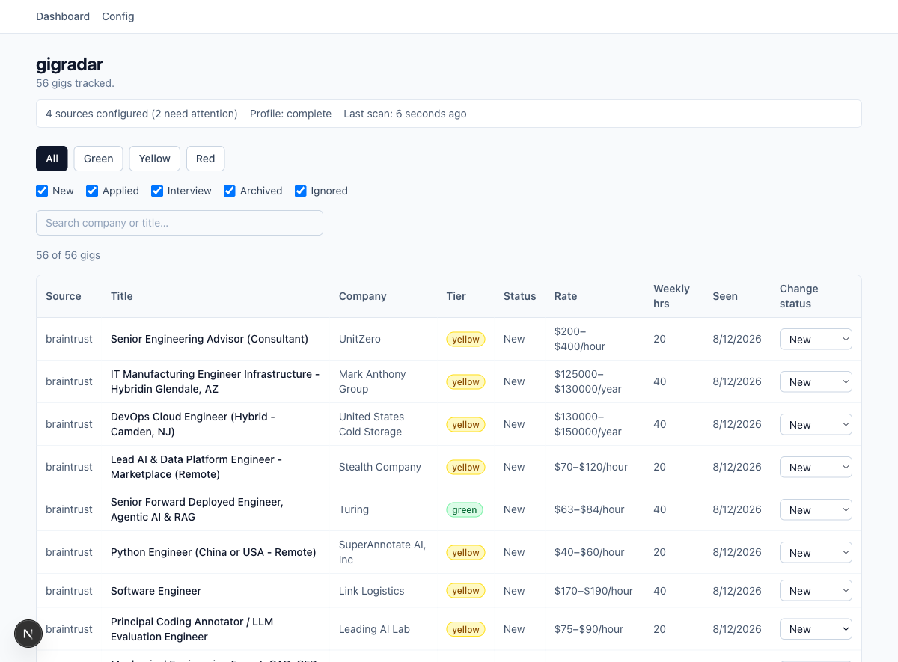

An open-source, local-first tool that scans the sources you enable, gates every listing against your own ranked rate/hours profiles — explainably, never a black box — and keeps the apply step human-approved by default. Nothing hosted. The one optional exception is auto-fire: real submission automation you have to earn per source, with a kill switch always one click away.
Signed .dmg, Apple Silicon. On another platform (or want to see the code first)? Run it from source — same app, any OS Node/Playwright supports.

Every install is single-user and local — your profile, criteria, and credentials never leave your machine unless you explicitly send them somewhere (like an LLM call you triggered yourself).
LinkedIn, GoFractional, A.Team, Wellfound, Braintrust, and more — nine and counting, each live-verified against the real site. Add another with config and a plugin — zero edits to the core.
A deterministic pass/fail with a human-readable reason per rule, plus green/yellow/red role-area tiering so "unknown, worth a look" never gets silently dropped.
Set a $250/hr fractional floor and a separate $700k full-time floor — every listing is checked against every profile it could match, not just the first one that fits.
Config, secrets, and captured session files are AES-256-GCM encrypted automatically — the key never lives next to the data it protects.
Click "Capture login," a real browser opens, you log in normally (including Google/GitHub SSO) — no manual CLI dance, no pasted cookies.
Applications are staged for human approval — nothing submits itself unless you opt in below. Your resume/links can seed your profile via an LLM call you explicitly trigger.
Real submission automation — but only per source/tier, only after you've manually approved enough real drafts to earn it, and a kill switch that disables everything, instantly, no matter what.
A cron-driven scheduler runs on your own machine, with per-source backoff and desktop notifications on new matches — plus a severity-tiered issues view so nothing silently fails in a log you never read.
Sort, filter, and search by tier and status, and track a listing from "new" through "applied" → "interview" → "archived" in one place.
The whole point is that you never have to hand-write a config file or run a CLI script to get set up.
Download the signed .dmg (macOS),
or clone and run npm install && npm run dev on any OS — either way, a local
dashboard comes up at 127.0.0.1:3000, never exposed beyond your machine.
Pick a role template or type your own — skills, rate floor, hours, and role-area keywords. Upload a resume and gigradar can suggest the rest.
Public boards work immediately. Anything needing a login gets one click on "Capture login" — a real browser, your real credentials, never gigradar's.
npm run radar (or a schedule) scans every enabled source,
gates and tiers each result, and the dashboard shows you what's worth a look.
gigradar's core knows nothing about any one person's job search — every source, criterion, and credential is your own local config. Add a source plugin without touching core code.
A few ways to help — or just say hi.
Fractional CTO & consulting — fixing and scaling tech stacks. mdostal.com/contact
If gigradar (or any of the tools) saved you time. buymeacoffee.com/mdostal
Small, sharp, open-source utilities I build and use. tools.mdostal.com
What I'm up to when I'm not shipping. life.mdostal.com
Event discovery, 8,000+ events/day from 7+ sources. ff.events